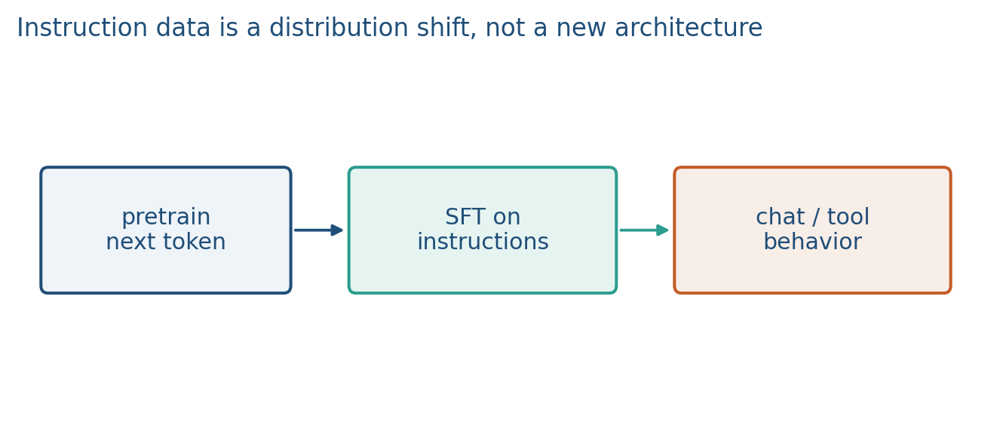
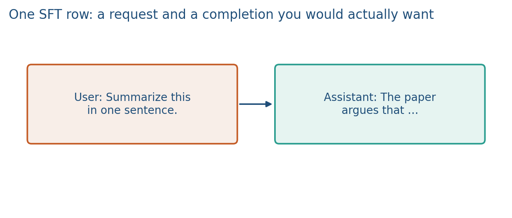
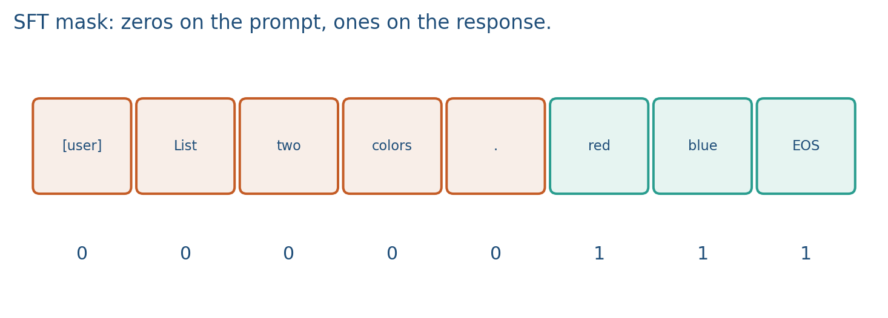

8.1 Supervised Fine-Tuning and Instruction Data
Mask the prompt. SFT copies answers; Week 9 is preferences.
These notes match the lecture slides. Use (slides) on the course hub for the deck.
Pretraining teaches next token on the web. Supervised fine-tuning (SFT) teaches a model to follow instructions: a user message, a demonstration of a good reply. Same transformer, different data.
1. What supervised fine-tuning (SFT) is
The pretrained decoder already assigns probability to every continuation. It does not, by default, answer as an assistant, refuse a harmful ask, or stay in a JSON schema. Supervised fine-tuning (SFT) continues maximum-likelihood training, but now each example is a prompt response pair and you typically supervise only the response tokens (mask the prompt in the loss).
Pretrain already speaks. SFT teaches format: follow the user, answer as an assistant. A row is not a Wikipedia paragraph. It is a task plus an answer you are willing to imitate:
- user: “Summarize this abstract in two sentences.”
- assistant: the two sentences.
Instruction fine-tuning is the first stage of the InstructGPT / ChatGPT stack. Preference methods (Week 9) sit on top of an SFT policy; they are not a substitute for a coherent instruction distribution. Alpaca and Vicuna are this stage with public data.
If the concatenated string has prompt tokens and response tokens, the SFT loss averages over positions, not . Otherwise the model spends gradient on imitating the user.
2. Why we use it
A base LM completes text; it does not reliably follow “Write a bullet list.” You need a behavior change—assistant turns, schemas, a house style—without inventing a new architecture. SFT is the cheap way to copy demonstrations you trust.
Preferences (Week 9) come after this. SFT can overfit to a style; it cannot invent a reward for “humans prefer B over A.” That is why the stack is pretrain SFT preferences, not “skip SFT and run RLHF on a base model.”
Quality beats volume once you have a few thousand clean pairs. Noisy scraped “instructions” teach the noise. If you mix many tasks, you still risk forgetting the pretrain distribution (note 8.2). Token accounting belongs in the same paragraph as “why”: if you report “2,000 SFT rows” without , you have not said how much supervision you ran. Ten-token answers and 400-token answers are different datasets.
3. Architecture
Same transformer. The causal mask is unchanged. What changes is the dataset and the label mask.
Each training row is a concatenated prompt and answer. Prompt positions are marked / ignored so they do not enter the mean loss. You still forward the prompt: the model must condition on it. You just zero those positions in the loss. That is a compute choice as well as a learning choice.



System prompts, few-shot exemplars, and tool schemas are part of the prompt design, not a separate model. Wording changes the SFT target: “be brief” and “write a memo” are different labels. Write the template you used (roles, delimiters, whether you included chain-of-thought). Evaluate with the same template. A project that “just fine-tuned LLaMA” without showing the instruction mix is incomplete.
4. How it works, step by step
- Collect or write pairs. A pair must include a prompt that looks like test time and a demonstration you would accept. A pretraining document has neither role.
- Concatenate prompt and answer. Build a 0/1 mask that is zero on the user side and one on the assistant side.
- Train a few epochs of next-token loss on the masked positions. Too many epochs: forget the base (note 8.2).
- Filter volume. Batch of two: one 80-token medical pair (all response tokens clean), one 800-token forum thread with a junk target. Uniform average over tokens the forum dominates 10:1. That is why 80 perfect pairs should lead the first SFT run, and the 80,000 threads should be filtered or down-weighted.
- Keep the template. If you include chain-of-thought in SFT, the demonstration is the trace plus the answer. At eval you must ask for the same format or you are measuring a different target. SFT with
### Instruction:and eval with ChatML roles is that bug.
Chalk the mask as a 0/1 vector under the tokens. Gradient hits only the response positions. The causal LM still predicts every next token; the loss does not.
5. Mathematical formulas
SFT is next-token training restricted to answer tokens:
If every sequence in a batch of size has prompt length and response length , the number of positions that enter the mean is , not . The fraction of the concat that is supervised is .
The pretrained objective was the same product of conditionals without the mask. SFT did not add a new head. It changed which tokens count.
6. Positive points and negative points
Positive.
- Fast behavior change on the same transformer: assistant turns, schemas, and house style without a new net.
- Masking the prompt keeps gradient on the demonstration you actually want copied.
- A few thousand clean pairs often beat a huge noisy scrape.
- Preference methods (Week 9) have a coherent instruction policy to sit on top of.
Negative.
- SFT copies answers, including bad ones. Noisy instruction data is method, not a footnote.
- Too many epochs on a narrow mix forgets the base (note 8.2).
- It is not a preference model. It cannot say “B is better than A” unless B was the demonstration.
- Uniform token averaging lets long junk threads dominate short clean pairs.
- A template mismatch (train one format, eval another) makes a fine loss look like a failed demo.
When not to. Do not use SFT as a substitute for a reward or a preference loop. Do not dump the whole web forum into the first run when you already have 80 trusted pairs.
7. Teaching this note
About 30–35 minutes at the board: pretrain vs SFT on one toy string, mask the prompt, then a good pair vs a noisy scrape. Play Karpathy 14:14–21:05 (finetuning into an assistant, ~7 min). Lab 8 is LoRA/forgetting, not an instruction dump.
Chalk the mask as a 0/1 vector under the tokens. If nobody can say why the zeros sit on the user side, replay that minute before the video.
8. Worked example
Token ids, cartoon: prompt [user] List two colors. is 6 tokens; response red blue is 3 tokens (including a leading space, say). The causal LM still predicts every next token, but the loss mask is . Gradient hits only the three response positions.
Batch of two: one 80-token medical pair (all response tokens clean), one 800-token forum thread with a junk target. Uniform average over tokens the forum dominates 10:1. That is why 80 perfect pairs should lead the first SFT run, and the 80,000 threads should be filtered or down-weighted.
A pair must include a prompt that looks like test time and a demonstration you would accept. A pretraining document has neither role.
If you include chain-of-thought in SFT, the demonstration is the trace plus the answer. At eval you must ask for the same format or you are measuring a different target. That is prompt design as method, not a style footnote.
9. Where students get stuck
- Training on the whole concat equally, so the model learns to mimic the user.
- Equating “more rows” with “better SFT” when most rows are noisy.
- Thinking SFT is RLHF. SFT copies answers; preferences come in Week 9.
10. Video
Karpathy — Intro to Large Language Models. Play the post-training / assistant section 14:14–21:05. Pause when he contrasts the base model with the assistant: that is SFT. RLHF in the appendix (21:05+) waits for Week 9.
11. Practice
-
Why mask the prompt tokens in the SFT loss instead of training next-token on the whole concatenated string equally?
-
You have 80 perfect medical instruction pairs and 80,000 noisy forum threads. Which set should dominate the first SFT run, and why?
-
Name one thing a good SFT pair must include that a pretraining document does not.
-
Prompt length 40, response length 10, batch 4 sequences (all the same lengths). How many token positions enter the SFT mean? What fraction of the concat is that?
-
You SFT with the template
### Instruction:but eval with ChatML roles. Why can the loss look fine while the demo fails?